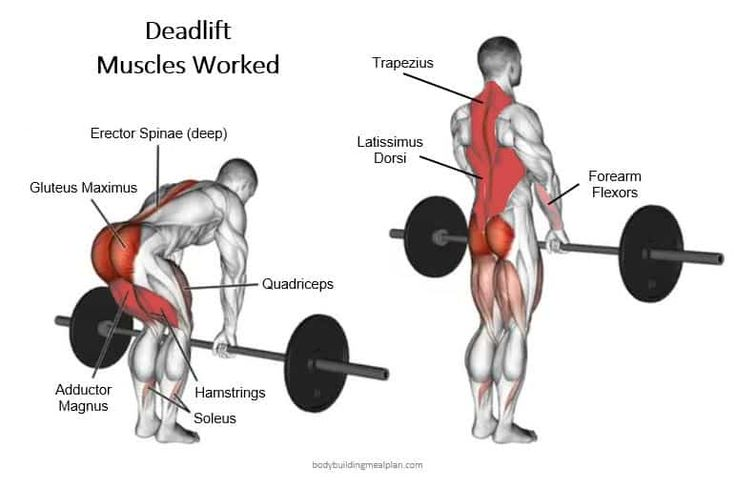

Felhúzás
A felhúzás (deadlift) egy olyan súlyemelő gyakorlat, amely a teljes testet megmozgatja és erősíti. Ez a komplex mozdulat több nagy izomcsoport együttes munkáját igényli, és kiválóan alkalmas az erőnlét, izomtömeg növelésére és az alapvető erő fejlesztésére. A legjelentősebb izomcsoportok közé tartozik a hátsó combizomcsoport (hamstrings), amelyek aktiválódnak a lábakkal történő erőteljes talajra gyakorolt nyomás során. Emellett a farizmok (gluteus maximus), az alsó hátizmok (erector spinae) és a csípő izmai is kulcsszerepet játszanak, stabilizálva a törzset és lehetővé téve a súly emelését. A hátizmok, beleértve a trapézizomot is (trapezius), szintén részt vesznek a felhúzásban, mivel segítik a vállak hátrahúzását és a törzs felfelé emelését. A markáns hasizmok (core muscles) szerepe is kiemelkedő, mivel ezek felelősek a törzs stabilizálásáért és a test egyensúlyának fenntartásáért. A felhúzás tehát nem csupán az alsótest erősítését célozza meg, hanem az egész test izomcsoportjait bevonja, kifejezve annak sokoldalúságát és hatékonyságát az erőnlét és a súlyemelés területén
A férfiak abszolút felhúzási világrekordot Hafthor Bjornsson tartja, akit ismertebb nevén "The Mountain" (A Hegy) szerepéből ismerhetünk a Trónok harca című sorozatból. Bjornsson 2020. május 2-án vált világrekorderré egy online élő közvetítésen, amikor 501 kg (1104,5 font) súlyt emelt fel a Thor's Power Gymben Izlandon. Ez az elképesztő teljesítmény megdöntötte Eddie Hall korábbi rekordját, és Hafthor Bjornsson azóta ismert a felhúzás történelmének egyik legkiemelkedőbb alakjaként.